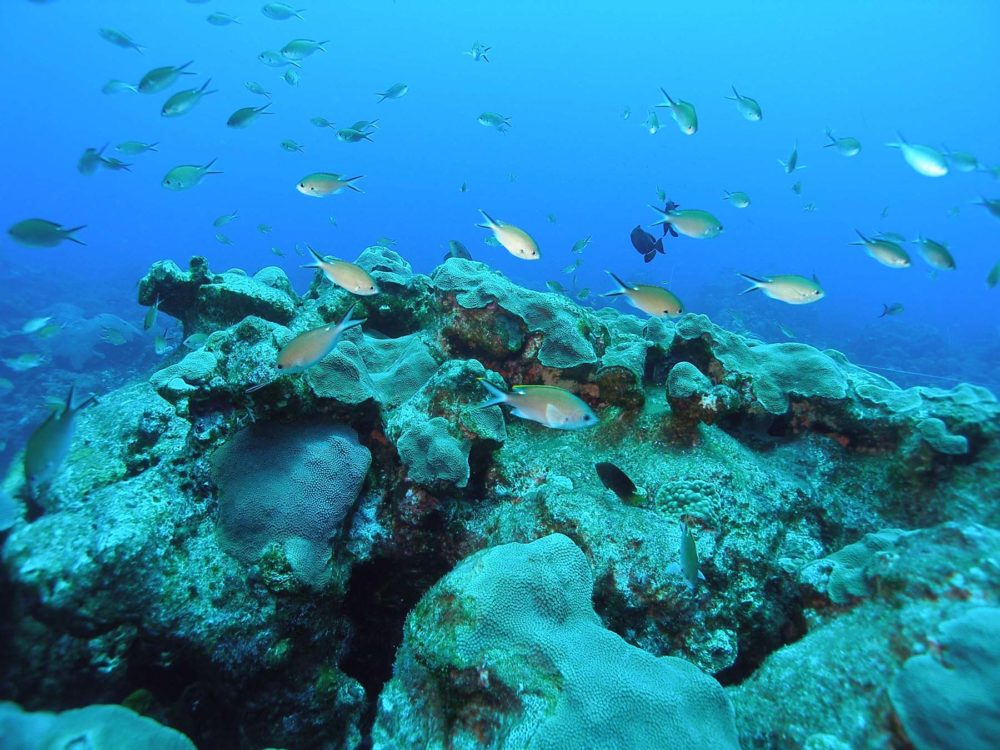

When you fish for love, bait with your heart, not your brain.

Great Barrier Reef
Great Barrier Reef Information
One of Australia’s most remarkable natural gifts, the Great Barrier Reef is blessed with the breathtaking beauty of the world’s largest coral reef. The reef contains an abundance of marine life and comprises of over 3000 individual reef systems and coral cays and literally hundreds of picturesque tropical islands with some of the worlds most beautiful sun-soaked, golden beaches.

Gulf of Mexico
Gulf of Mexico Information
An ocean basin and a marginal sea of the Atlantic Ocean, largely surrounded by the North American continent.